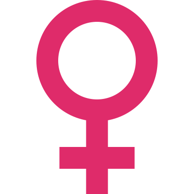

Os vikings são uma antiga civilização originária da região da Escandinávia,
que nos dias atuais compreende o território de três países europeus: a Suécia,
a Dinamarca e a Noruega. Também conhecidos como nórdicos ou normandos,
eles constituíram uma rica cultura que se desenvolveu devido à atividade agrícola,
o artesanato e um notável comércio marítimo.
A vida dos vikings voltada basicamente para os mares também colaborou para que a pirataria se tornasse outra
importante atividade econômica destes povos. Em várias invasões realizadas pela Europa Continental, os
vikings saquearam e conquistaram terras, especialmente na região da Bretanha, que hoje abriga do Reino
Unido.
A sociedade viking era caracterizada por sua hierarquização, ou seja, sua divisão social em classes sociais
muito bem definidas. Apesar das divisões existentes, todos os homens livres (e isso inclui ricos e pobres)
tinham direitos de cidadãos e, portanto, podiam participar das tomadas de decisões nas assembleias.
O topo da hierarquia social dos vikings era ocupado pelo rei, chefe militar e religioso do território
que controlava. A centralização do poder aconteceu ao longo da Era Viking na Escandinávia e contribuiu para
o fortalecimento da posição dos reis. Seu poder era hereditário, mas essa hereditariedade não era
necessariamente de pai para filho.
Nessa hierarquia, abaixo dos reis estavam os nobres, popularmente conhecidos como jarls. Eles eram
possuidores de grande riqueza e vasta quantidade de propriedades e possuíam um poderio militar considerável.
Em determinados locais da Escandinávia, o poder dos jarls era tão grande que rivalizava com o poder real.
Em uma posição abaixo dos nobres, estavam os “nórdicos livres”, que basicamente eram todo escandinavo
que não fosse nobre nem escravo. Esse era o maior grupo da sociedade viking e era composto por camponeses,
pescadores, comerciantes, artesãos etc. Por fim, os escravos eram a base da sociedade viking. Considerados
propriedades dos cidadãos, os escravos poderiam ser criminosos condenados, pessoas endividadas ou
estrangeiros.
A religião dos vikings não possui um termo específico que a nomeie, portanto, os historiadores utilizam a
expressão paganismo nórdico. A religião dos nórdicos possuía elementos de xamanismo (prática
religiosa que possui magia e transe como elementos) e era formada pela crença em diferentes deuses, isto é,
era politeísta.
Dos principais deuses nos quais os nórdicos acreditavam, destacavam-se Odin e Thor. Odin era
para os vikings o deus mais poderoso e sábio, considerado o criador de tudo e referido como o “Pai de
Todos”. Thor era o deus trovão e o mais adorado de toda a Escandinávia. Os vikings acreditavam que parte de
seus deuses morava em Asgard, um dos nove mundos existentes em sua crença.
Esses nove mundos, segundo essa crença, estavam interligados entre si a partir da Yggdrasil, o freixo
da vida. A conexão de Midgard (terra do meio, mundo dos humanos) com Asgard (morada de parte dos
deuses) acontecia pela Bifrost, a ponte arco-íris protegida pelo deus Heimdall.
Os nórdicos acreditavam ainda que o universo teria um final catastrófico conhecido como Ragnarök, no
qual os deuses antigos morreriam e um universo surgiria em seguida. Essa concepção, no entanto, é
questionada em relação à sua veracidade pelos historiadores, pois, afirma-se, seria baseada no cristianismo
e, portanto, não possuía base real na religiosidade nórdica.